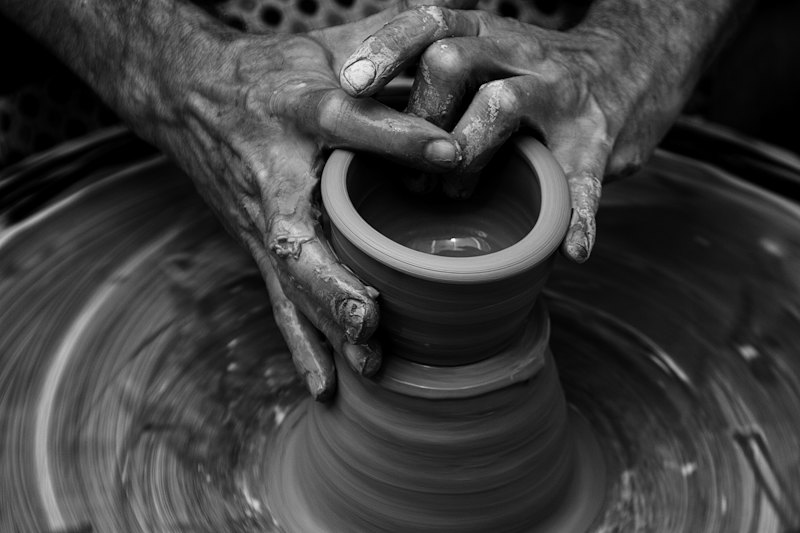
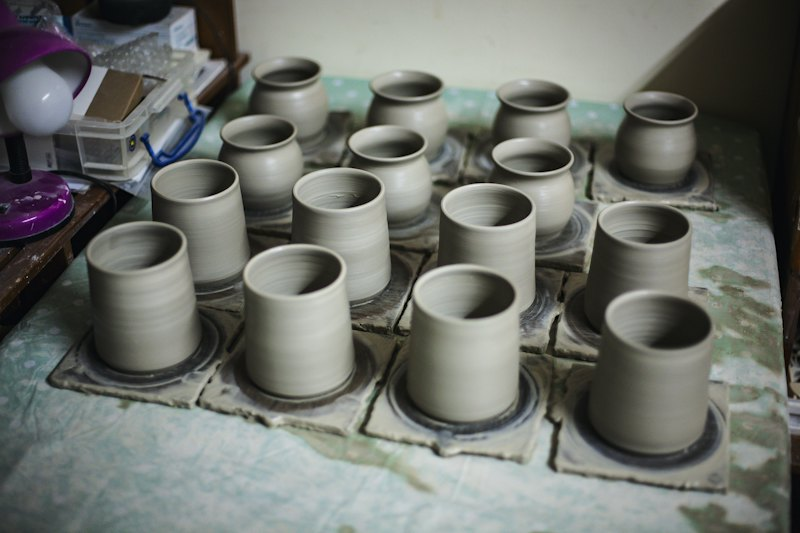
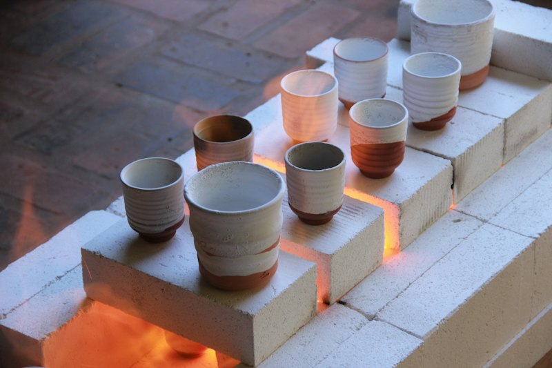
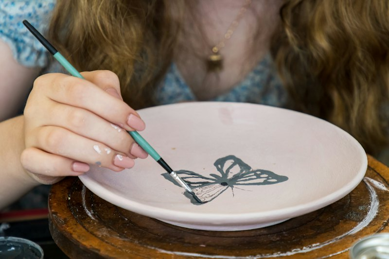
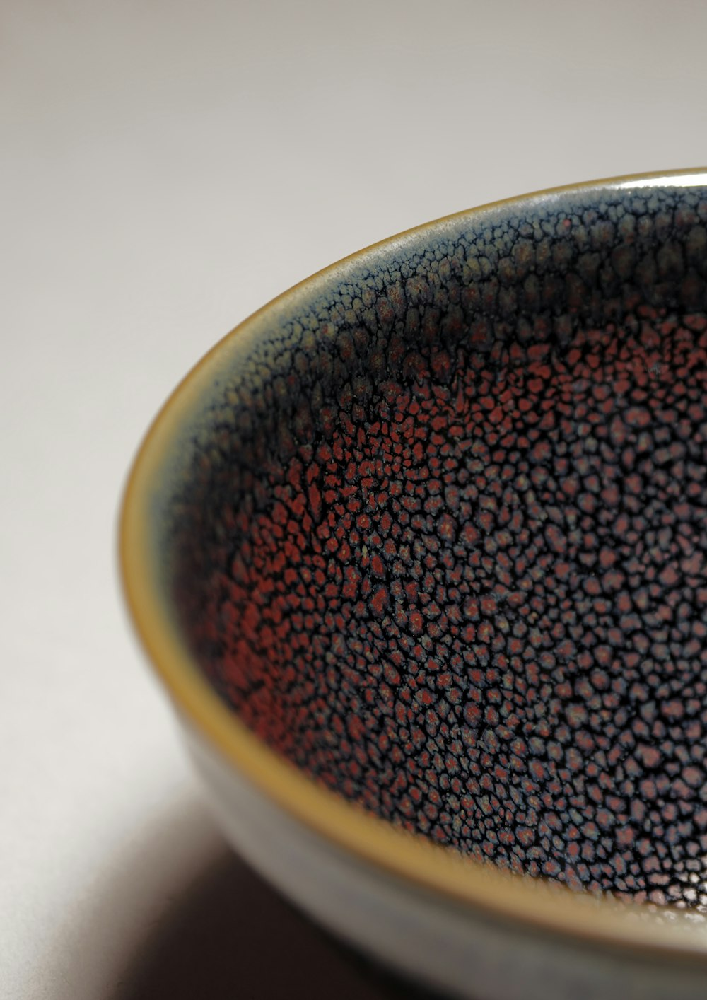

Каждая вещь одна такая. Нажмите «Хочу такую»: закрепим её за вами или сделаем похожую. Форма останется, глазурь ляжет иначе.
Полка обновляется, когда вещи заканчиваются. Если понравившуюся забрали, напишите: сделаем похожую за три недели.
Столько живёт одна вещь в мастерской. Быстрее не получится: глина должна высохнуть, глазурь расплавиться, а печь остыть.

День 1
Центруем комок глины и вытягиваем форму. Дно оставляем толще стенок: оно держит вес.

Неделя 1
Вещь сохнет под плёнкой и на воздухе. Спешка ломает: неровно высохшая глина трескается в печи.

Неделя 2 · 980 °C
Глина становится керамикой, но ещё пористой. Теперь вещь можно брать в руки и глазуровать.

Неделя 3
Окунаем, поливаем, расписываем. Цвет зависит от толщины слоя: тонкий выходит светлее, густой темнее.

Неделя 4 · 1 250 °C
Глазурь плавится и растекается по-своему. Печь открываем через двое суток и смотрим, что получилось.
Тарелки, пиалы, кружки и чайные пары для кафе, ресторанов и чайных. Серии от 20 предметов: размер и вес одинаковые, а глазурь живая, поэтому у каждого гостя на столе вещь чуть своя.
Перед серией делаем два пробных образца и подбираем размер под вашу подачу. Клеймо с логотипом ставим оттиском на донце.
Чаша или чайная пара в крафтовой коробке, на донце имя или логотип. К Новому году заказы принимаем до 10 ноября.
Парные чаши с датой, наборы для гостей от 10 штук, блюдо для колец. Писать лучше за 6—8 недель.